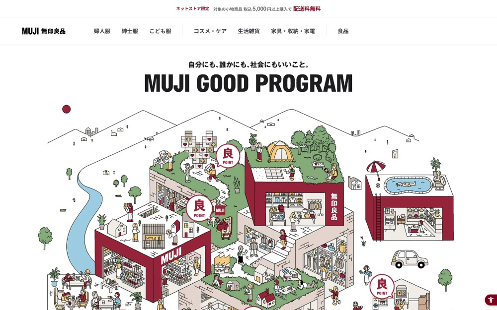

MUJI GOOD PROGRAM
白地に #7f0019 を大きな面で置く配色。影も枠線もほとんど使わない。本文 16px・行間 1.6、セクション間 32px。
配色
文字色は #3c3c43 / #1d1d1f / #6d6d72 / #7f0019。
どこに使っているか（箇所数）
| 色 | 面 | 文字 | 枠線 | ボタンの地 |
|---|---|---|---|---|
#f2f1ed |
7 | 0 | 7 | 0 |
#f4eede |
12 | 0 | 0 | 0 |
#ffffff |
4 | 1 | 0 | 0 |
#e8dabf |
1 | 0 | 0 | 0 |
#dde5cf |
7 | 0 | 9 | 0 |
#3c3c43 |
1 | 73 | 1 | 1 |
#1d1d1f |
0 | 38 | 0 | 0 |
#6d6d72 |
0 | 10 | 0 | 0 |
#7f0019 |
0 | 11 | 0 | 0 |
#7f0019 は文字色として11箇所で使うのが主。面としては0箇所しかないが、1枚が大きく画面の0%を占める。ボタンの地には使っていない。
文字
和文
Helvetica Neue欧文
Helvetica Neue本文
16px / 行間 1.6この見本は Noto Sans JP で表示していますあのイーハトーヴォのすきとおった風
あのイーハトーヴォのすきとおった風
あのイーハトーヴォのすきとおった風
あのイーハトーヴォのすきとおった風
あのイーハトーヴォのすきとおった風
あのイーハトーヴォのすきとおった風
あのイーハトーヴォのすきとおった風
余白とかたち
| コンテンツ幅 | 1104px | |
|---|---|---|
| 読ませる段の幅 | 1020px | |
| セクションの上下余白 | 32px | |
| 並びの間隔 | 4 / 16 / 18 / 24px | |
| 角丸 | 0px（大きな面は 4px） | |
| 影 | なし | |
| 画面幅の切り替え | 1000 / 999 / 840 / 600 / 599px |
ボタン
お問い合わせ
#3c3c43 / 16px / 700 / 角丸 4px
ページの組み立て
上から順に、実際に並んでいたセクション。高さの比率もそのまま。
1
ヒーロー（画像）
1240px
2
1カラム・画像あり
600px
3
1カラム・画像あり
3020px
4
3カラム・画像あり
2220px
5
1カラム・画像あり
2240px ・ #f2f1ed
全5セクション、すべて全幅。
面と、その上に置く線・文字
| 面 | 使用箇所 | 線と文字 |
|---|---|---|
#f4eede |
9 | #7f0019 |
#f5f5f5 |
6 | #7f0019 |
#ffffff |
2 | #7f0019 |
#e8dabf |
1 | #7f0019 |
線と文字の色は固定ではなく、乗っている面で入れ替える。
部品
同じ形が 7 箇所。角丸 4px ／ 3px #e6e2d6 の線 ／ 影なし
タグ
角丸 999px ／ 18px
PCとスマホ
同じサイトを390px幅で測り直した値。
| PC 1440px | スマホ 390px | |
| 本文 | 16px / 行間 1.6 | 14px / 行間 1.61 |
| セクションの上下余白 | 32px | 40px |
| 左右の余白 | — | 0px |
| 並びの間隔 | 18px | —px |
文字サイズの段は 23 / 14 / 12px。セクション余白はPCの125%まで詰める。
画像
3:2・8枚
8枚。角丸 0px。